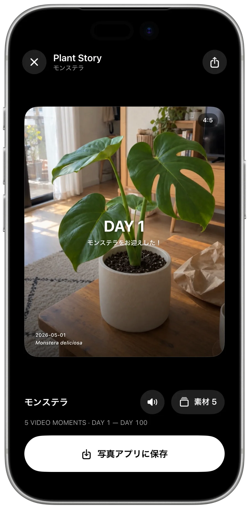
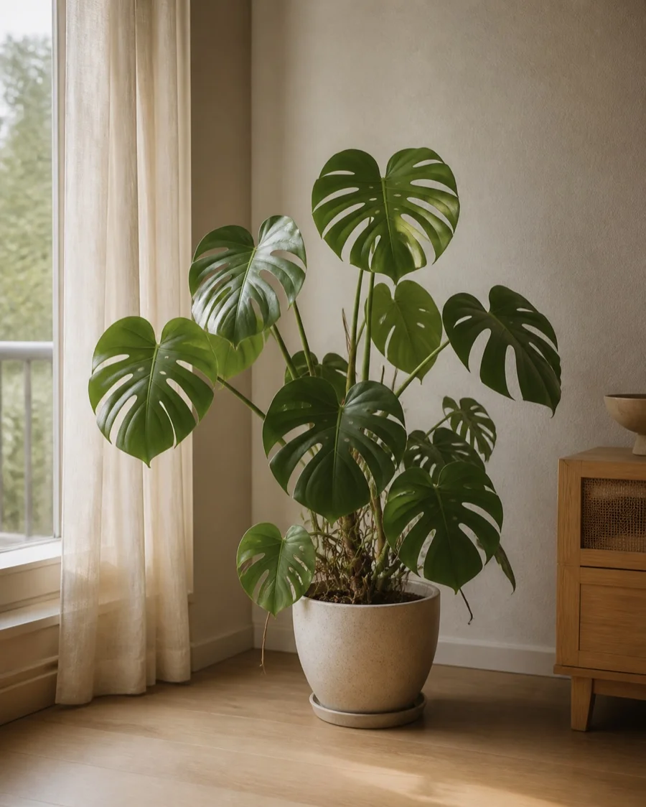
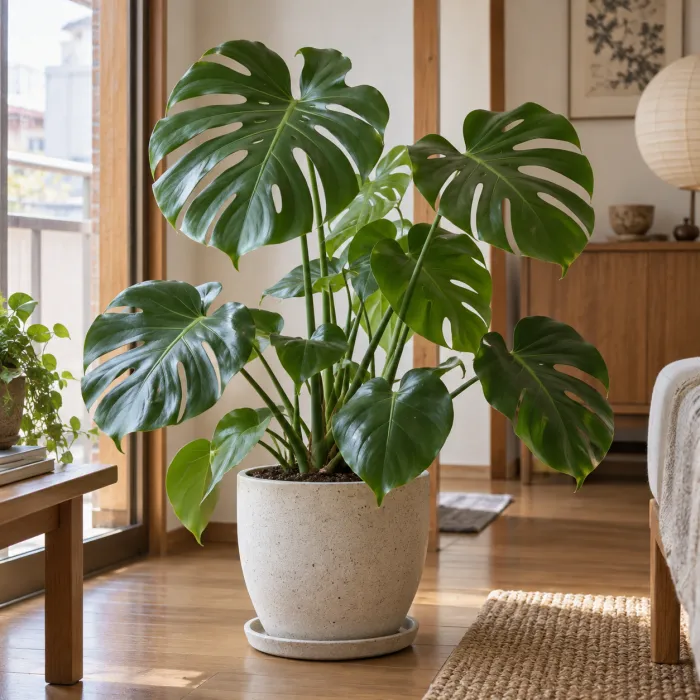

01 — Plants
あなたの植物を、
ひとつの場所に。
名前が分からなくても大丈夫。写真から植物名を推定して、そのまま登録。部屋ごとのタグで、増えても見失いません。
毎日のお手入れが、いつの間にか、ひとつの物語になる。


DAY
1
Monstera deliciosa
うちに来た日。
新しい葉が、ほどけた。
窓辺へ、ぐんと伸びる。
土の中にも、季節がある。
100日目の、いつもの景色。
Video Moment & Plant Story
気づいた変化を、たった2秒で撮るだけ。
積み重ねたVideo Momentが、1本のPlant Storyになります。

01 — Plants
名前が分からなくても大丈夫。写真から植物名を推定して、そのまま登録。部屋ごとのタグで、増えても見失いません。
02 — Care
水やり、葉水、肥料、剪定。「数日ごと」から「2週間ごとの水曜・金曜」まで、植物に合わせた予定を。ホームから一括で記録できます。
03 — Photo
テンプレートを選ぶだけで、迎えてからの日数と植物名が美しく重なります。文字の表示やフィルターも自由に。
04 — Story
お手入れのついでに残した2秒が、DAY 1からDAY 100へ。完成したPlant Storyは写真アプリに保存して、好きな場所でシェア。

Photo Moment
DAY、植物名、日付を美しいタイポグラフィで重ねて。
テンプレートとフィルターで、記念の一枚に仕上げます。
Features
間隔・曜日・一回きり。Proなら月ごとに間隔を変えて、季節にも合わせられます。
植物が増えても、ホームからまとめて完了。
水やりと一緒に、関連するお手入れも同時に記録。
植物に合わせて、お手入れ項目をカスタマイズ。
予定は命令じゃない。植物の様子を見て、ずらせます。

名前が分からない子も、写真から。
植物の記録、Photo Moment、Video Momentの撮影マスターまで丸ごと書き出し。新しいiPhoneへ、そのまま引っ越し。